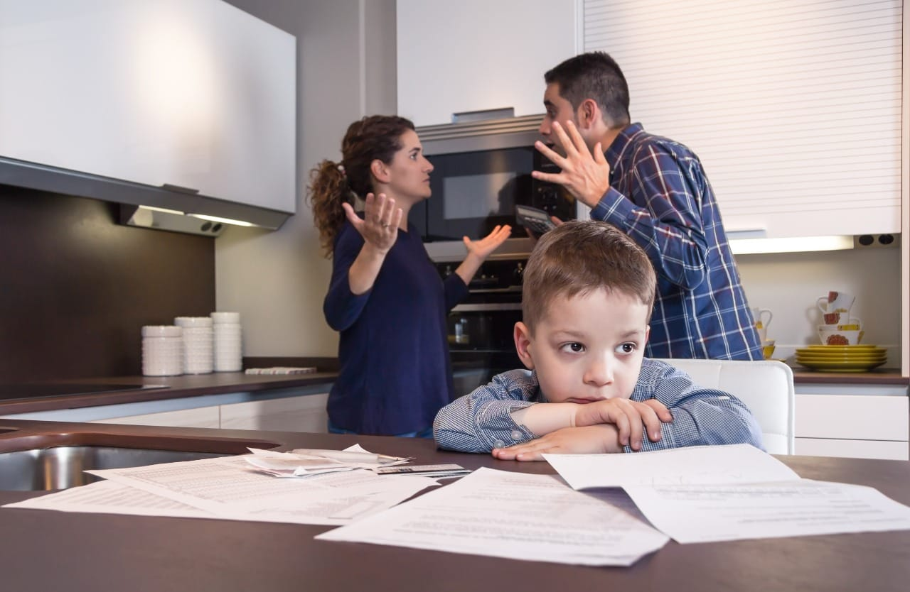

Ansiedad por Calificaciones y Exámenes
Superando los bloqueos antes de examenes y exposiciones.
Introducción
El entorno escolar y universitario actual va mucho más allá de la simple adquisición de conocimientos; representa un escenario de alta competencia, evaluación constante y presión social donde la baja autoestima, el estrés y la ansiedad se entrelazan de forma crítica, condicionando directamente el éxito y la permanencia del estudiante en las aulas. La baja autoestima actúa como el catalizador inicial de este problema. Un alumno que no confía en sus propias capacidades intelectuales o que se define a través de una autocrítica severa tiende a percibir cualquier tarea, examen o exposición como una amenaza directa a su valor personal. Al sentirse inherentemente insuficiente, el estudiante enfrenta las demandas escolares desde una postura de vulnerabilidad, lo que activa de inmediato respuestas biológicas y psicológicas de alerta.
¿Por qué nos afecta la presión escolar?
La presión escolar nos afecta porque el cuerpo y la mente reaccionan ante las exigencias académicas excesivas como si estuvieran frente a una amenaza constante. Cuando las tareas, los exámenes o las expectativas superan nuestra capacidad de respuesta, se activa un estado de estrés crónico que altera nuestro equilibrio integral.
Sobre Nosotros. Nuestro Objetivo
Nosotros somos estudiantes de la preparatoria CBTA197, del salón 3A de la carrera Técnico en Programación, Esta página web ha sido creada con un propósito claro, visibilizar, explicar y dar a conocer los efectos de la ansiedad y el estrés en el ámbito académico, consideramos que era una buena temática para nuestra página debido a que absolutamente todos los estudiantes han sentido nervios antes de un examen o exposición, ansiedad a la hora de la entrega de calificaciones y presión por sacar buenas calificaciones. En nuestra página buscamos que los estidiantes conozcan bien estos problemas, que los sepan identificar y que hacer si sufren de ello. .
Collage
